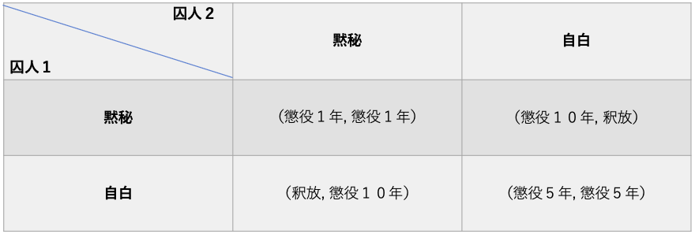

ゲーム理論では一番有名な例である。
2人の共犯者が警察に捕まり、それぞれの取り調べの結果により、懲役が1年になるか5年になるか、10年になるか、はたまたその場で釈放されるか、という駆け引きが行われている。
この取り調べから考えられる結果は以下のようになる。
2人とも自白→互いに懲役5年
2人とも黙秘→互いに懲役1年
一方が自白し、もう一方は黙秘→自白した方は釈放され、黙秘した方は懲役10年
これを利得行列にまとめると以下のようになる。

つまり、囚人１にとっても囚人２にとっても、自白することが一番良い戦略であると言える→支配戦略
（自分が自白して相手が黙秘すれば自分は釈放されるし、相手も自白したとしても5年の懲役で済むため）
２人の囚人は自分に得がある選択をするはずなので、共に自白することが考えられる（支配戦略の組み合わせ）→支配戦略均衡
しかし、この結果は共に黙秘することよりも悪い結果になっている。
なぜなら、2人共自白した場合懲役は5年だが、共に黙秘した場合は一年で済むからだ。
このように、個人の合理性（支配戦略）を選択した場合、その組み合わせ（支配戦略均衡）によっては、結果が合理的になるとは限らない。
★つまり、合理的＋合理的＝合理的とは限らない。
相手の戦略それぞれに対し、自分にとって一番利得が高い戦略を求めること。
つまり、他のプレイヤーの戦略に対して、自分お利得を最大にする戦略である。
(ゲーム理論とは＃２・ゲームを解く参照）
★ゲーム理論では、相手が持つ全ての選択肢に対して、自分の戦略を考える必要がある
映画・ビューティフルマインドの主人公であるジョン・ナッシュが提唱した概念である。
ナッシュ均衡とは”全員が最適反応戦略を取り合っている戦略の組み合わせ”である。
言い換えると：自分だけではもうこれ以上利得を大きくできない状態のこと。
つまり、自分だけ戦略を変更しても、自分が損をする状況が全プレイヤーで起こっている。
従って、ナッシュ均衡のもとでは全プレイヤーが戦略を変更することはないことが容易に想像できる。→戦略を変えても損するだけだから
囚人のジレンマを例に考えてみると。。。
2人とも自白するという戦略がナッシュ均衡である。
なぜなら...
囚人１が自白を選択している状態で、囚人２が黙秘を選択しても利得は高くならない。（懲役5年から懲役10年へ）
また同じように、囚人２が自白を選択している状態で、囚人１が黙秘を選択しても利得は高くならない。